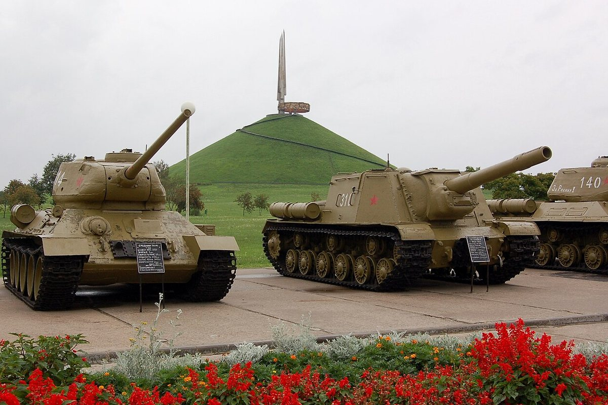
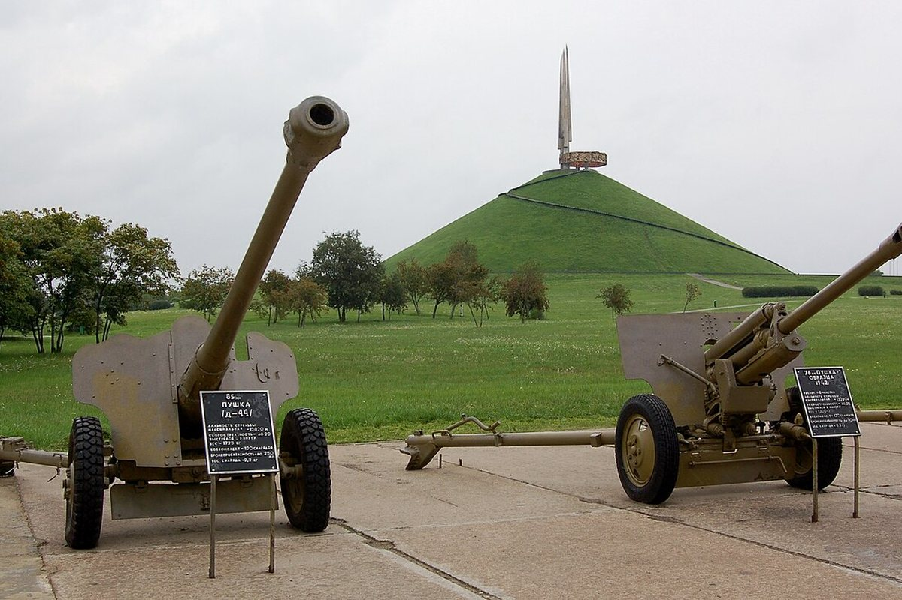
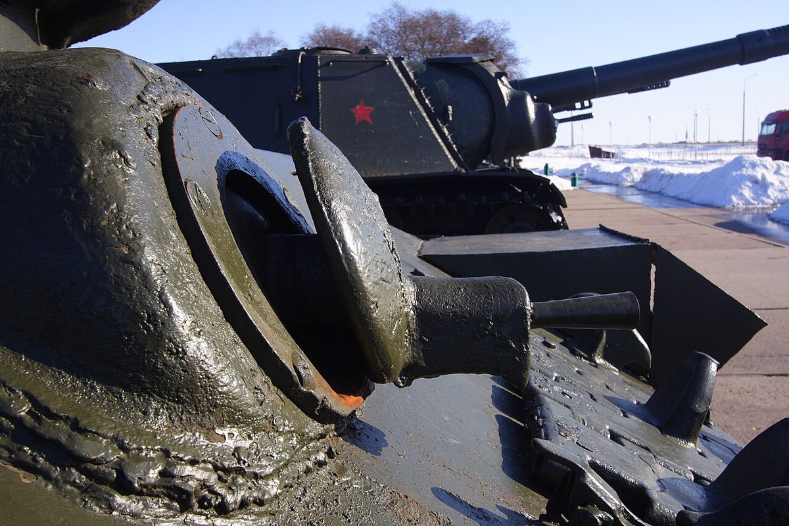

35-метровый курган на шоссе Минск — Москва, увенчанный четырьмя штыками-обелисками. Символ освобождения Беларуси в 1944 году.
Курган Славы — мемориальный комплекс на 21-м километре шоссе Минск — Москва. Он посвящён освобождению Беларуси в 1944 году.
Курган высотой 35 метров увенчан четырьмя бетонными штыками-обелисками высотой 35,6 метра, облицованными титаном. Они символизируют четыре фронта, участвовавших в Белорусской операции.
Курган заложен 30 сентября 1966 года представителями городов-героев, воинских частей, трудящихся и учащихся Минска и Минской области. Открыт 5 июля 1969 года.
Авторы мемориала — скульптор Андрей Бембель, архитектор Аркадий Стахович и инженер Владимир Лапцевич. Сегодня это одно из самых посещаемых мест военной памяти в Беларуси.


